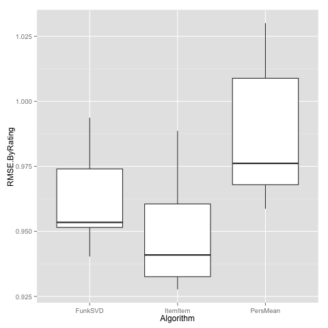

Getting Started with the Evaluator
The LensKit evaluator lets you train algorithms over data sets, measure their performance, and cross-validate the results for robustness. This page describes how to get started using the evaluator for a simple experiment.
We will use the LensKit command line tool from the binary distribution to run the experiment. You can also run experiments from more sophisticated build tools such as Gradle.
Prerequisites
To run the evaluator, you’ll need the following:
- Java 6 or later (Java 7 or later is best).
- The LensKit binary distribution.
- A tool for analyzing the results. For this example, we will use R with ggplot2.
- The MovieLens 100K data set.
Creating the Evaluation Script
The core of an experiment is the evaluation script, typically called eval.groovy:
Unpack your MovieLens data set (your current directory should have an
eval.groovy file and a ml-100k directory), and run the script using the
lenskit program from the binary distribution1:
$ lenskit eval
This does does a few things:
- Splits the MovieLens 100K data set into 5 partitions for cross-validation.
These partitions are stored under
ml-100k-crossfold. - Generates predictions for test user/item pairs using three algorithms: personalized mean, item-item CF, and Funk-SVD.
- Evaluates these two algorithms with three metric families: coverage, RMSE, and nDCG.
- Writes the evaluation results to
eval-results.csv, one row for each combination of algorithm and fold.
Analyzing the Output
LensKit produces a CSV file containing the evaluation results. This can be analyzed with your choice of tool, for example R:
This will produce a box plot of per-user RMSE:

Further Reading
- This whole project can be cloned from GitHub.
- Walk through the eval script
-
Without any options, the
evalLensKit command runs the evaluation defined in the fileeval.groovy. If you want to use anothe file name, specify it with-f file.groovy, just likemake. This is useful for having multiple different evaluations in the same directory. ↩